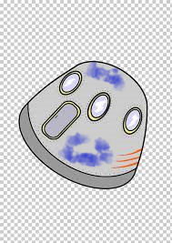

Hyperblog
Tu blog de cabecera
Este es el titulo atractivo e interesante de post.
Y este es el parrafo de inicio donde vamos a explicar las cosas incribles quese pueden hacer con ramas
Los blog son la mejor forma de compartir informacion y tus ides Mucho mas que ir a conferencias o salir de youtube. Exepto si eres un rockstar.
Suscribete y dale like
El párrafo es la exposición coherente y por escrito de una idea completa. Es unidad de pensamiento y sentimiento, forma la unidad de expresión en el lenguaje escrito. Dicha unidad está integrada por dos elementos: el enunciado principal y los enunciados secundarios, los cuales complementan al principal.